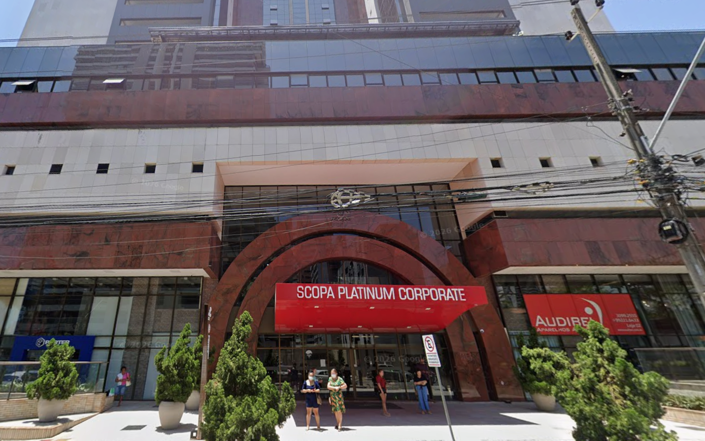
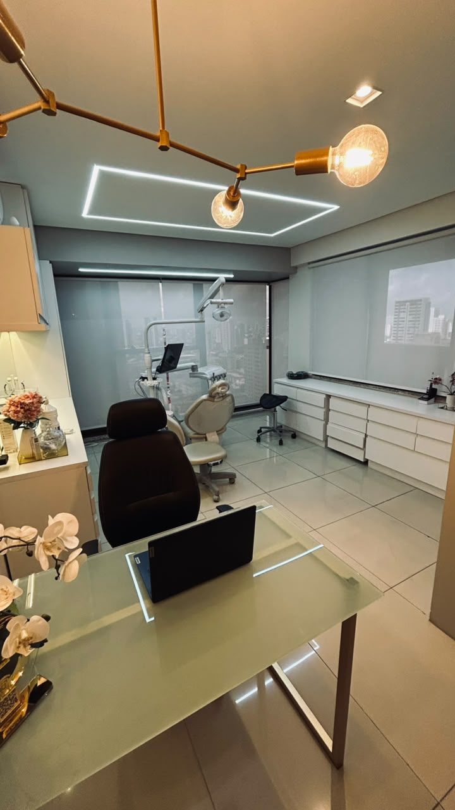
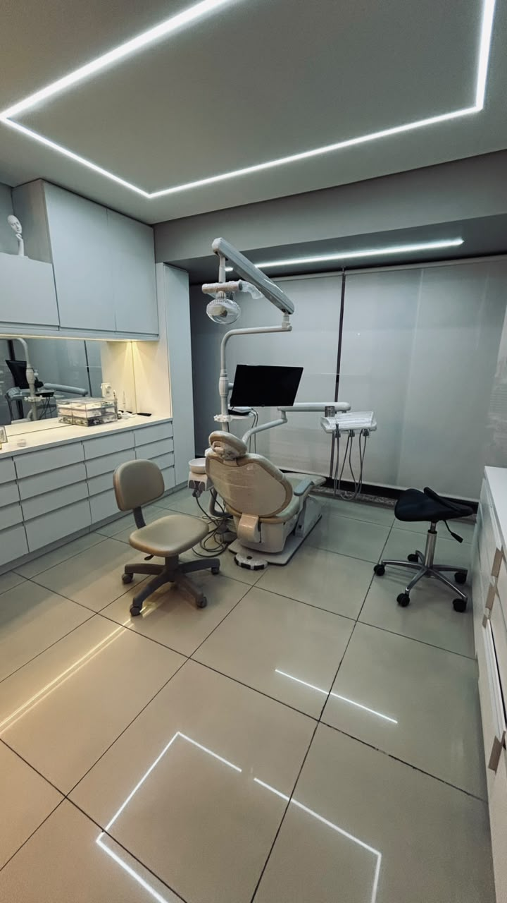
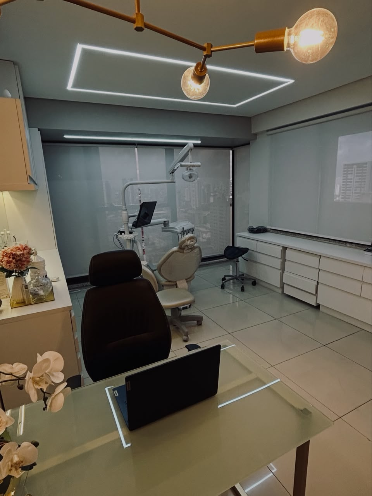
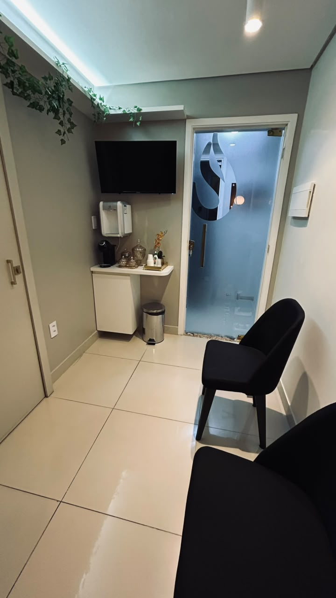

Atendimento odontológico humanizado, com planejamento digital, para clínica geral, implantes, próteses, alinhadores invisíveis e endodontia — no seu tempo, sem julgamentos.

Você evita rir aberto em fotos ou reuniões de trabalho por vergonha do sorriso.
O medo de sentir dor faz você adiar uma consulta que já deveria ter feito.
Já tentou resolver por conta própria — clareamento de internet, prótese provisória — e não resolveu de verdade.
Tem receio de gastar com um tratamento e não ficar com um resultado natural.
Isso não é falta de cuidado com você mesmo(a). É falta do profissional certo, no momento certo — com calma para te explicar cada etapa.
Cada etapa do tratamento é pensada para reduzir sua ansiedade e te devolver previsibilidade.
Cada etapa do tratamento é explicada com clareza, no seu tempo, para você se sentir seguro(a).
Próteses e alinhadores desenhados digitalmente, com mais precisão, conforto e previsibilidade.
Técnicas modernas de anestesia e biossegurança para tratamentos mais confortáveis.
Transparência desde a primeira consulta, sem procedimentos desnecessários.
Da chegada ao edifício até a sala de atendimento — veja como é o ambiente antes mesmo da sua consulta.





Pra você chegar no dia da consulta já conhecendo cada canto do consultório.
Cinco frentes de cuidado, sempre com avaliação individual antes de qualquer indicação.
Avaliação completa da saúde bucal, prevenção, restaurações, limpeza e acompanhamento periódico.
Reposição de dentes perdidos com implantes planejados digitalmente, com segurança e aparência natural.
Confecção com fluxo digital para mais precisão, conforto, estética e adaptação ao seu dia a dia.
Correção discreta e confortável do posicionamento dos dentes, sem aparelho metálico.
Tratamento de canal com técnicas modernas para eliminar a dor e preservar o dente natural.
Marque uma avaliação e a gente monta o plano de tratamento com você.
Falar no WhatsAppCirurgião-dentista à frente do consultório na Aldeota, em Fortaleza, desde junho de 2016. Atua em clínica geral, implantodontia, prótese, alinhadores invisíveis e endodontia, sempre com planejamento individual para cada paciente.
O foco do atendimento é simples: entender a história de cada paciente — os medos, as tentativas anteriores, o tempo disponível — antes de propor qualquer tratamento.
O implante é realizado com anestesia local e técnicas modernas que proporcionam conforto durante o procedimento. A maioria dos pacientes relata um pós-operatório mais tranquilo do que imaginava.
Sim. São indicados para muitos casos em adultos que desejam corrigir o alinhamento dos dentes de forma discreta, confortável e sem aparelho metálico convencional.
Não. A endodontia evoluiu muito. Com anestesia adequada e técnicas atuais, o tratamento é realizado de forma segura e confortável, preservando o dente natural sempre que possível.
Sim. Um dos diferenciais do consultório é o atendimento humanizado — cada etapa do tratamento é explicada com clareza para que você se sinta seguro(a) e confortável durante todo o processo.
É feita uma avaliação completa da saúde bucal, análise das suas necessidades e elaboração de um plano de tratamento personalizado, considerando saúde, função e estética.
O agendamento pode ser feito diretamente pelo telefone ou pelo WhatsApp. A equipe ajuda na escolha do melhor horário e esclarece todas as dúvidas antes da consulta.
| Segunda a sexta | 08h–12h / 14h–18h |
Sem pressão, sem julgamento. Só um plano de tratamento pensado para você.